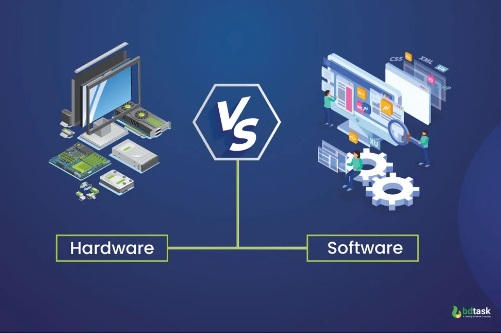
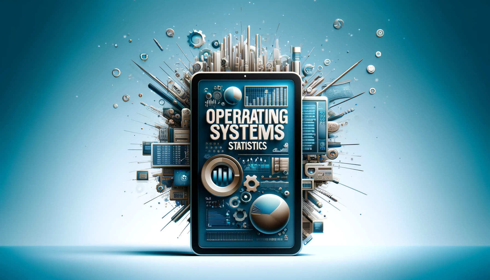
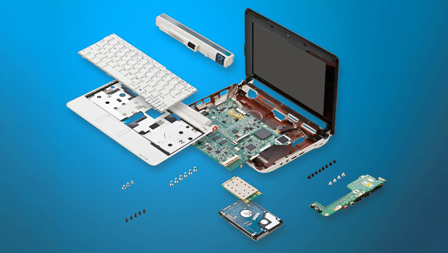

Introduction to Computers

Lesson 1: What is a Computer?
A computer is an electronic device capable of performing complex calculations, storing data, and executing programs. It operates on hardware and software to process and output data.
Example: A laptop or smartphone is a computer that performs tasks such as browsing the internet, sending emails, and running applications.
Functions of a Computer:
- Input: Receiving data (e.g., typing text).
- Processing: Performing calculations or operations (e.g., running software).
- Storage: Saving data (e.g., files, documents).
- Output: Delivering results (e.g., displaying text on a screen).
Types of Computers:
- Desktop: Typically used in offices or homes with a stationary setup.
- Laptop: A portable computer with built-in screen and keyboard.
- Tablet & Smartphone: Small, mobile devices with touch interfaces.
- Server: A powerful machine that provides services and stores data for other computers over a network.

Lesson 2: Computer Components (Hardware & Software)
Hardware vs. Software:
- Hardware: The physical components of the computer (e.g., CPU, monitor, keyboard).
- Software: Programs and applications that run on the computer (e.g., Windows OS, Microsoft Word).
Basic Components of a Computer:
- Input Devices: Keyboard, mouse, scanner.
- Processing Unit: CPU, RAM, motherboard.
- Storage Devices: Hard drive (HDD), solid-state drive (SSD), cloud storage.
- Output Devices: Monitor, printer, speakers.

Lesson 3: Understanding the Operating System (OS)
An Operating System (OS) manages hardware and software resources and provides a user interface. Examples include Windows, macOS, and Linux.
Basic Functions of an OS:
- File Management: Organizing and storing files (e.g., documents, images).
- Task Management: Managing running programs.
- Security: Protecting the computer from malware and unauthorized access.

Lesson 4: Basic Computer Terminologies
Common Terms:
- CPU: Central Processing Unit (brain of the computer).
- RAM: Random Access Memory (temporary storage for active tasks).
- HDD: Hard Disk Drive (permanent storage for data).
Bit & Byte:
- Bit: The smallest unit of data (either 0 or 1).
- Byte: 8 bits grouped together (e.g., 1 byte can represent one letter).
File Extensions:
- .txt: Text file.
- .docx: Word document.
- .exe: Executable file.